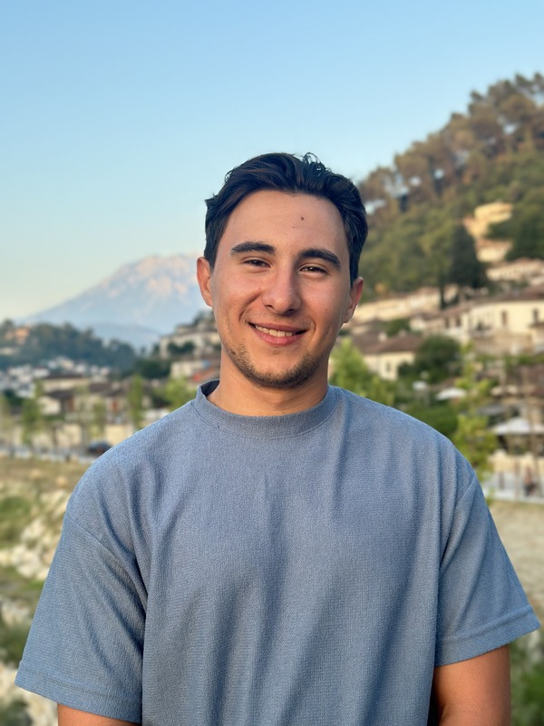

Social Media Coordinator
University Engineering Society
Esbjerg, Denmark
- Manage the society's Instagram account, curating content with Canva to engage engineering students
- Promote educational initiatives and build community among fellow students
Hello, I'm
Chemical Engineering Student
Biotechnical Science graduate with hands-on experience in quality control and mechanical testing at The LEGO Group. Passionate about green chemistry, sustainable materials, and data-driven laboratory processes.

I'm a Chemical Engineering and Biotechnology student at Aalborg University in Esbjerg, Denmark, expected to graduate in 2027. Before this, I completed an AP Degree in Chemical and Biotechnical Science at Business Academy Aarhus, where I also attended international summer schools in Berlin and Aarhus.
During my studies, I spent a full year as an intern at The LEGO Group, working on quality control, mechanical testing of Duplo bricks, and programming UR robots. I independently developed a method for scratch quantification on LEGO bricks, presented my findings to a panel of engineers, and authored internal SOPs.
I'm driven by the intersection of chemical engineering and sustainability — whether it's optimizing nylon production processes, developing bio-based adhesives from lignin waste, or studying green biotechnology. I bring analytical rigor, multilingual communication, and a collaborative spirit to every project.
University Engineering Society
Esbjerg, Denmark
Dronning Louise
Esbjerg, Denmark
THE LEGO Group
Billund, Denmark
Just Eat
Aarhus, Denmark
Aalborg University — Esbjerg
Expected Jun 2027
Currently pursuing a degree in chemical engineering with focus on biotechnology, sustainable processes, and green chemistry.
Business Academy Aarhus
Graduated Jan 2024
Collaborative program with BHT University of Applied Science and Technology (Germany). Included a 1-year internship at The LEGO Group.
BHT University — Berlin, Germany
Aug 2022
Study of chlorophyll extraction from spinach. Part of the AP Degree program.
Business Academy Aarhus & Seneca College Toronto
Jun 2022
Process optimization in brewery settings, in collaboration with Seneca College, Canada.
Effect of Diacid Chloride Type and Volume Ratio on Waste Efficiency and Material Properties
Investigated how different diacid chloride types and volume ratios affect waste generation and material properties in laboratory-scale nylon production. Explored pathways to make nylon synthesis cleaner and more sustainable, addressing the environmental impact of nitrous oxide emissions and microplastic pollution.
Production of Glue from Lignin Waste Material
Developed a bio-based adhesive using waste lignin from the pulp and paper industry combined with chitosan, a biodegradable biopolymer. Conducted in collaboration with PhotoCat (Danish cleantech) and Essity, using their InnoLig+® sulfur-free lignin. Aimed to replace toxic formaldehyde-based adhesives with a renewable, low-toxicity alternative.
I'm always open to discussing new opportunities, research collaborations, or anything related to chemical engineering and sustainability.